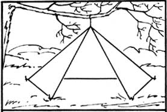
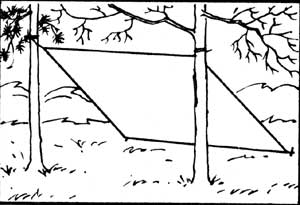
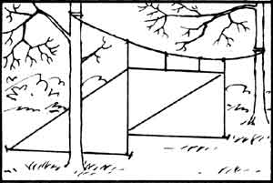
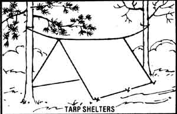
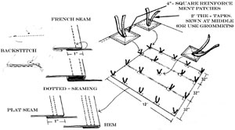
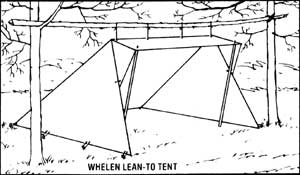
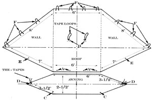
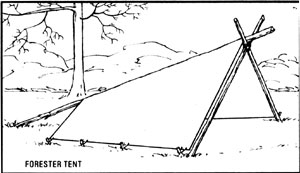
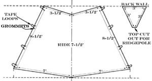

Here are a mufti-use tarp shelter and two tents: three rugged, inexpensive items of...
Readers of outdoor literature who've been around for a while have undoubtedly encountered one or more of Bradford Angier's many books. Drawing upon a lifetime of experience gained living in the wilderness (especially at his backwoods home on British Columbia's Peace River, near Hudson Hope), Angier writes with knowledge and a Thoreauvian simplicity.
When I'm camping with a pack train, I carry a light 7-1/2' X 12' tarpaulin rolled behind my saddle. Such a versatile tarp goes with me while I'm canoeing, too.
The tarp I've long used I made myself by overlapping and sewing together three 12' strips of water-repellent green fabric 32" wide, then adding a 1 " hem all around. The corners I reinforced by stitching on four 4 "-square pieces of the same material. Half-inch-diameter grommets at each corner (rather than the tie-tapes shown in the accompanying illustration), two on each of the shorter sides, and three on the two longer sides, completed the job. And since I used grommets instead of ties, I added a 6'-long, 1/4"-diameter section of rope to each of the metal eyes.
Ordinarily, I pitch this tarp at a single 45° slant, with the two sides bushed in and a cheerful fire burning companionably in front. It can also be erected several other ways, depending on the circumstances, as suggested by the illustrations.
MATERIAL AND EQUIPMENT CONSIDERATIONS
Your choice of tarpaulin material will be a matter of compromise, for the heavier the fabric, the greater both the abrasion resistance and the tear strength. Yet you'll likely want the finished product to be as lightweight as is reasonable.
Nylon is a possibility, but its slipperiness makes it an often-sleazy fabric, prone to fray badly unless finished seams are used or the edges melted to fuse the yarns together. Too, the very elasticity of nylon thread, which makes it excellent for adjustment to stress, causes it to be difficult to use in home sewing machines. Even though you can get around this with practice and with proper tension adjustment, the old dependable cotton still has vital advantages, not the least of which is its ability to accept and retain water-repellent treatments.
The best tent fabric at the time of this writing is a cotton reinforced with nylon or Dacron. Even with this material, though, a water-repellent treatment must be periodically repeated. The direst enemy of water repellents is dirt, by the way, so keep your equipment clean.
Nylon has ample strength even in ultralight weaves, though there will be trouble in waterproofing it. A good combination for lightweight waterproof tentage, then, is a layer of two-ounce cotton for the covering proper and a top layer of one-ounce, plasticcoated nylon for a rain fly. The soundest idea, in any event, is to procure your material from a reliable tent company (many will mail free catalogs).
Because of the amount of stitching involved, a sewing machine-which can usually be rented if one is not already in your home-is almost essential in the making of tents, sleeping bags, and clothing. The lockstitch foot is preferable to the chain-stitch foot, as the seams of the former will not pull out. Rotary bobbins will sew more rapidly than the long-shuttle varieties. For those hard-to-reach spots that have to be sewn by hand, a pair of sturdy needles and a thimble will do the job, along with a little beeswax to strengthen the thread and, if it's nylon, keep it from kinking.
A sturdy stitch for hand-sewing is shown in the accompanying illustrations. Such a backstitch assures a dependable, strong, continuous seam.
TARP CONSTRUCTION
Sew your pieces of material together to make a tarp of the desired dimensions, hemming the two cut edges or, if the material is nylon, fusing them with a hot iron. Where the grommets-or, if you prefer, tie-tapes-are to be affixed, sew on reinforcements cut from the fabric itself. Four 4 "-square corner reinforcements will be fine, while 2" X 4" oblongs will suffice along the edges. Conclude the operation by adding 1/2"-diameter grommets (or tie tapes, each being a 2' length of twill tape that's folded in the middle where it's attached to the tarp . . . to give you two 1' ties at each point).
If you wish to dye or decorate the tarpaulin, now's the time to do it. Then, unless you've used an already water-repellent material, end the project by waterproofing; the covering. Begin by pitching the tarptight and crease-free-some sunny morning. Take a pound of paraffin (inexpensively procured in cakes at most grocery stores), cut the block into shavings, and dissolve these in a gallon of turpentine. The process can be hastened by placing the can of turpentine and wax in a receptacle of hot water. Keep it away from flames, however, as it's quite flammable. Then paint the fabric liberally with the solution, preferably while both the tarp material and the solution are warm, and let the tarpaulin stand until it's thoroughly dry.
WHELEN LEAN-TO TENT
"Most men are needlessly poor all of their lives because they think they must have such a house as their neighbors have," an old woodsman by the name of Henry David Thoreau observed more than a century ago. "Consider how slight a shelter is absolutely necessary."
The Whelen lean-to tent, designed by the old friend who wrote On Your Own in the Wilderness with me, remains my favorite. Colonel Townsend Whelen's pattern, which is shown here, will accommodate one or two campers, sleeping with their sides to the front. The previous discussion of materials and sewing methods, considered in connection with tarpaulins, holds here as well. Allow one inch around the edges for hemming. The other key details follow.
CONSTRUCTING THE WHELEN LEAN-TO TENT
After cutting the material to the dimensions shown in the illustration and hemming the edges, sew the back edge of the awning to the front edge of the tent. Next, insert grommets at the four "A" points-or attach tie-tapes-for anchoring the tent to the ridgepole. At the two "B" points, sew tape loops to the outside of the tent . . . in periods of heavy snow, you can tie cords leading from these loops to a tree or a support pole to keep the roof from sagging in the middle.
Now, at the two "C" points on the front edges of the awning, attach I "-diameter grommets, into which you'll insert two sharpened poles to keep the awning extended when the tent is pitched. Then sew tietapes to the corners of the awning at the two "D" points-which should align with the two grommets inserted in the tent's sides at the "E" points-to secure the awning's side flaps to the tent. Finally, insert the 10 "F" tape loops through 20 grommets, spaced as shown along the tent's bottom edges, to accept the tent pegs.
As with the various tarpaulin shelters, you should pitch the Whelen lean-to tent with its back to the prevailing wind. Then a brisk fire built out front, with a wall of rocks or green logs behind as a reflector in the coldest weather, will provide light and perfect comfort. A mosquito net can be suspended across the open front of the tent in bad bug areas, without destroying the openair feeling.
THE FORESTER TENT
If you need to cut weight or cost, the Forester tent is a good solution. It's one of the best tents ever devised for a chronic woodsloafer, particularly for one who yearns to live close to nature and who objects to spending any of his or her outdoor hours confined in a closed canvas or nylon cell.
The Forester tent is the cheapest of all wilderness tents, either to make yourself or to buy. It's the easiest and quickest to construct and pitch, too. And considering its scant weight and bulk, it's the most comfortable in which to live and do your few camp chores. Also, with the exception of the Whelen lean-to tent, it's the easiest to warm with a campfire out front.
The one weak point of the Forester, at least at first glance, is that if you try to flyproof it, you'll ruin its inexpensiveness and functional simplicity. In bug time, however, it's an easy matter to buy a mosquito bar to drape over the front opening . . . or to make one yourself, or to hang or stake a net closure over your bed.
The Forester tent is triangular in shape when pitched. The smallest practical dimensions for one person, or for two who don't mind a bit of crowding, is about 7' wide at the open front, 3' wide at the back, and 7' deep from front to rear. The peak should stand about 6' above the ground in front, while the triangular rear will be some 3' high. With the entire tent open to the fire in front, the angles are such that heat and light will be reflected throughout the sheltered area. It is, of course, a tent for the wilderness, where poles and firewood are plentiful.
This tent is usually pitched with three poles and eight stakes cut at the campsite. The ridgepole should be long enough to extend from the peak and to pass down and out through the opening at the top of the back wall, at such a tilt that it will rest on the ground about 3' behind the tent. Two shorter poles are arranged in front as a bipod brace and, holding the ridgepole at their crossing, run from the peak to the front corners.
The size illustrated here is for one or two campers, with beds arranged along the side walls. The model I use is made of closely woven, waterproofed cotton that weighs five ounces per square yard, cut and sewn to the shape and dimensions shown, with an extra inch being allowed around the edges for hemming.
Note how the bottoms of the sides are angled back 1' to make the tent sit right on the ground. To do this, cut your pattern from rectangular canvas as shown by the dotted lines, then angle the front and back. The piece for the rear wall is cut off square at the top, so that when it's stitched to the main body of the tent at the rear, a hole is left at the top of the back wall through which the ridgepole can extend. Total weight for this size Forester tent is about four pounds.
TO THE ROAD LESS TAKEN
I hope that you outdoorspeople will find each of these time-tested projects - the versatile tarp shelter, the Whelen lean-to tent, and the Forester tent - as economical, fun to make, and satisfying to use as I have all these many years.
|
 From Wilderness Gear You Can Make Yourself by Bradford Angier, published by Stackpole Books, Harrisburg, Pennsylvania. Copy right ? 1973 by Bradford Angier. Adapted with permission of the author. |
 FORESTER TENT SEWING DETAIL |
 |
|
 |
 |
 |
|
 |
 |
 |